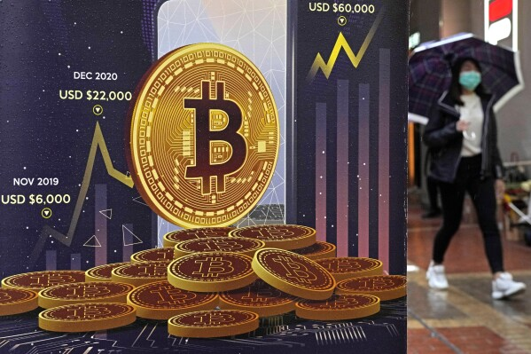

Latest News

Bitcoin Hits New High
Bitcoin has once again captured global attention as it surged to a new all-time high this week,
driven by increasing institutional investments and growing confidence among retail traders.
Analysts suggest that the rise is fueled by positive market sentiment, reduced regulatory
concerns,
and the continued adoption of cryptocurrency in mainstream financial systems.
Experts also note that the recent price movement reflects a broader shift in how digital assets
are perceived, transitioning from speculative investments to long-term financial instruments.
While volatility remains a concern, many investors believe that Bitcoin’s current trajectory
signals a strong and sustainable growth phase in the crypto market.
Ethereum Upgrade Incoming
Ethereum developers have officially announced a major network upgrade aimed at improving
scalability, security, and transaction efficiency. The update is expected to significantly
reduce
gas fees and enhance processing speed, addressing long-standing issues faced by users and
developers.
The upgrade also introduces improvements to smart contract functionality, allowing for more
complex decentralized applications (dApps) to be built on the network. Industry experts believe
this could further strengthen Ethereum’s position as a leading blockchain platform, especially
in the growing sectors of decentralized finance (DeFi) and NFTs.
As anticipation builds, investors are closely watching how the upgrade will impact Ethereum’s
price and adoption in the coming months.